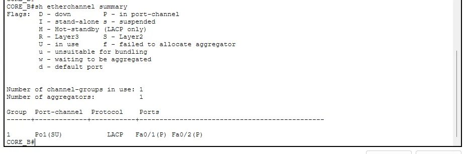
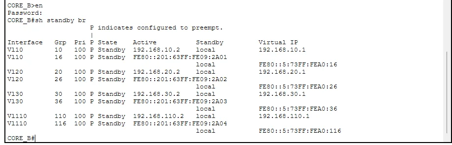
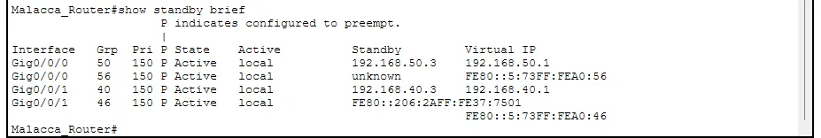

A network with one switch uplink or one default gateway has a single point of failure. In my enterprise network assignment I removed two of them: link failures with EtherChannel, and gateway failures with HSRP. They solve different problems, so I will take them one at a time and then show how I verified them.
EtherChannel: two cables acting as one
EtherChannel bundles several physical links into one logical Port-channel. You get the combined bandwidth, and if one cable fails the bundle keeps working without Spanning Tree having to reconverge, because STP sees only one link. I used LACP, the open standard, with both ends in active mode. Each bundle was a trunk carrying all VLANs.
interface range fa0/1 - 2
channel-group 1 mode active
!
interface port-channel 1
switchport mode trunk
switchport trunk native vlan 999In the lab I built these bundles between the two HQ core switches, between the JB multilayer switch and its server-farm switch, and between the Malacca multilayer switch and its development switch. Two ports per bundle was enough for each.
Checking the bundle
The only command you really need is show etherchannel summary. Look at the flags next to the Port-channel: SU means Layer 2 and in use, and the member ports should carry P, meaning bundled in the port-channel. If you see I (stand-alone) or s (suspended), the bundle did not form properly.

A bundle only forms when both ends agree on the protocol and the settings. If one side is LACP and the other is PAgP or static, the ports will be suspended. Using LACP active on both sides means a mis-cabled or mismatched port stays out of the bundle instead of causing a loop.
HSRP: a gateway that does not die
Hosts have one default gateway address. HSRP lets two devices share a virtual IP, with one active and one standby. If the active one stops sending hellos, the standby takes the virtual IP over and the PCs never change their gateway setting. I used HSRP version 2 on every site, because it supports IPv6 and larger group numbers.
interface vlan 10
standby version 2
standby 10 ip 192.168.10.1
standby 10 priority 150
standby 10 preempt
standby 16 ipv6 autoconfigThe active device gets priority 150 and the other keeps the default of 100. preempt matters: without it, when the stronger device recovers after a failure it would not take its role back. I numbered the groups by VLAN (group 10 for VLAN 10, group 20 for VLAN 20) and used the VLAN number plus 6 for the IPv6 group, so group 16 is the IPv6 side of VLAN 10. That convention made the verification output much easier to read.
Verifying HSRP
show standby brief lists each group with its priority, state, the active and standby peers and the virtual IP. On CORE_B every group showed Standby with priority 100, while on the Malacca router the groups showed Active with priority 150.


The failover test
The test I planned was simple: shut down the VLAN interface on the active device, wait about ten seconds (the default hold time with a 3-second hello), and check that the standby device becomes active while the virtual IP stays the same. A ping to the virtual address from a PC should lose only a few packets. Then bring the original device back, and because preempt is configured and its priority is higher, it should become active again.
Things to watch for
- EtherChannel needs the same speed, duplex and VLAN settings on every member port.
- Both ends of a bundle must use compatible modes. Active with active, or active with passive, works for LACP.
- HSRP only protects the gateway. If the standby device does not have the same VLANs and routes, failover will happen but the traffic will go nowhere.
- Without
preempt, the roles you designed are not the roles you get after a failure.
The VLANs these gateways serve are described in VLANs Explained with Cisco Commands.